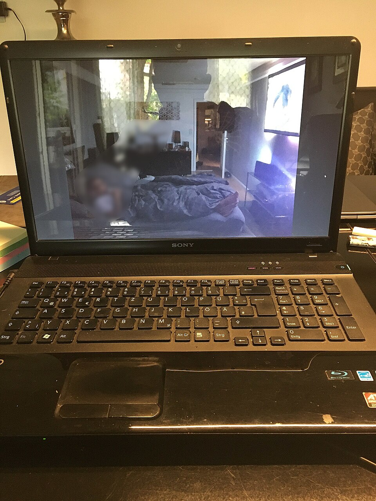

Categoría: Historia del streaming
Los antecedentes del streaming y el video bajo demanda en Latinoamérica

Antes de que las plataformas de suscripción ocuparan un lugar visible en la conversación audiovisual latinoamericana, ya existían distintas maneras de escoger qué ver y cuándo hacerlo. El videoclub, la grabación doméstica y los DVD permitían separar parte del consumo de la programación de los canales. No eran streaming, pero ayudan a entender una demanda anterior por controlar el horario y la selección.
Video bajo demanda y streaming tampoco son sinónimos. El primero describe la posibilidad de elegir un contenido fuera de una emisión lineal; el segundo es una forma de transmitir datos mientras se reproducen. Un video bajo demanda puede llegar por Internet o por una red de televisión de pago; una transmisión en directo por Internet puede utilizar streaming sin ser un catálogo bajo demanda. La diferencia importa para reconstruir cómo convivieron estos servicios en la región.
Durante los años 2000, el crecimiento de Internet y de la banda ancha abrió nuevas posibilidades para el video en computadoras. El acceso, sin embargo, dependía de la infraestructura, la velocidad, el costo y los equipos disponibles. Un estudio de la CEPAL de 2010 examinó la banda ancha en América Latina como una infraestructura cuyo despliegue requería atender barreras tecnológicas y económicas. Una conexión disponible en una ciudad no garantizaba la misma experiencia en todos los hogares. [1]
Los portales de video añadieron otra dimensión: sus usuarios podían publicar y compartir grabaciones, además de buscarlas y verlas. En junio de 2007, YouTube anunció versiones locales para nueve países, entre ellos Brasil, con interfaz y contenidos adaptados. La fecha corresponde al lanzamiento de esa versión brasileña, no al nacimiento mundial de la plataforma ni a un lanzamiento simultáneo en toda Latinoamérica. [2]
También hubo proyectos de televisión por Internet orientados a la región. En diciembre de 2006, la publicación especializada PRODU informó del lanzamiento de Terra Mundo, una oferta de Terra con Jump TV que incluía señales de distintos países y se financiaba con publicidad. Era una experiencia de distribución de canales por Internet; no debe confundirse con un servicio de películas bajo demanda ni con una plataforma de suscripción como las que se expandirían después. [3]
Un antecedente internacional fue la opción de visualización inmediata que Netflix anunció en enero de 2007 para sus abonados de alquiler de DVD. La empresa empezó con computadoras y un despliegue gradual, complementando su negocio físico. Esa fecha describe el servicio anunciado en Estados Unidos; no indica su llegada a Latinoamérica. El anuncio también muestra las limitaciones técnicas de la época: la calidad dependía del ancho de banda disponible. [4]
La entrada latinoamericana de Netflix llegó en septiembre de 2011. La empresa informó que comenzó en Brasil el día 5 y anunció un despliegue escalonado que incluía Argentina, Paraguay y Uruguay el 7, y México, Centroamérica y el Caribe el 12. Este punto de referencia no implica que antes no existieran video en línea, emisiones por Internet u otros intentos de distribución digital en la región. [5]
Los operadores de televisión y telecomunicaciones también ofrecieron alternativas. En Argentina, la presentación de Cablevisión On Demand en 2012 combinaba programas ya emitidos, alquileres y contenidos asociados a servicios de pago mediante decodificadores compatibles. La cobertura inicial se concentraba en el área metropolitana; el servicio bajo demanda por Internet era, según la información de la época, un proyecto posterior. El ejemplo ilustra que elegir contenidos en el televisor no dependía necesariamente de una plataforma abierta en Internet. [6]
Los modelos de acceso eran distintos: portales financiados por publicidad, catálogos de suscripción, alquileres y servicios vinculados a un abono de televisión podían coexistir. También cambiaban los derechos de distribución, la oferta de contenidos y la disponibilidad por territorio. Tener acceso a un sitio no significaba disponer del mismo catálogo o de la misma calidad de reproducción en todos los países.
El streaming latinoamericano se desarrolló, por tanto, sobre una combinación de hábitos anteriores, redes desiguales e iniciativas internacionales y regionales. La televisión abierta, el cable y los soportes físicos no desaparecieron con la aparición de los catálogos digitales. Para seguir esa transición conviene observar cada mercado y diferenciar una tecnología de transmisión de la forma comercial en que se ofrece.
Fuentes y referencias
- CEPAL, Acelerando la revolución digital: banda ancha para América Latina y el Caribe, 2010. Se consultó el resumen y el índice; el texto completo requiere verificación adicional.
- YouTube, «YouTube Speaks Your Language!», 19 de junio de 2007 (en inglés).
- PRODU, «Agresivo posicionamiento de Terra en TV», 4 de diciembre de 2006.
- Netflix, anuncio de visualización inmediata en computadoras, 16 de enero de 2007 (en inglés).
- Netflix, «Netflix llega a Latinoamérica y el Caribe», 5 de septiembre de 2011.
- José Crettaz, «Cablevisión lanzó un servicio de video a demanda», La Nación, 26 de octubre de 2012.